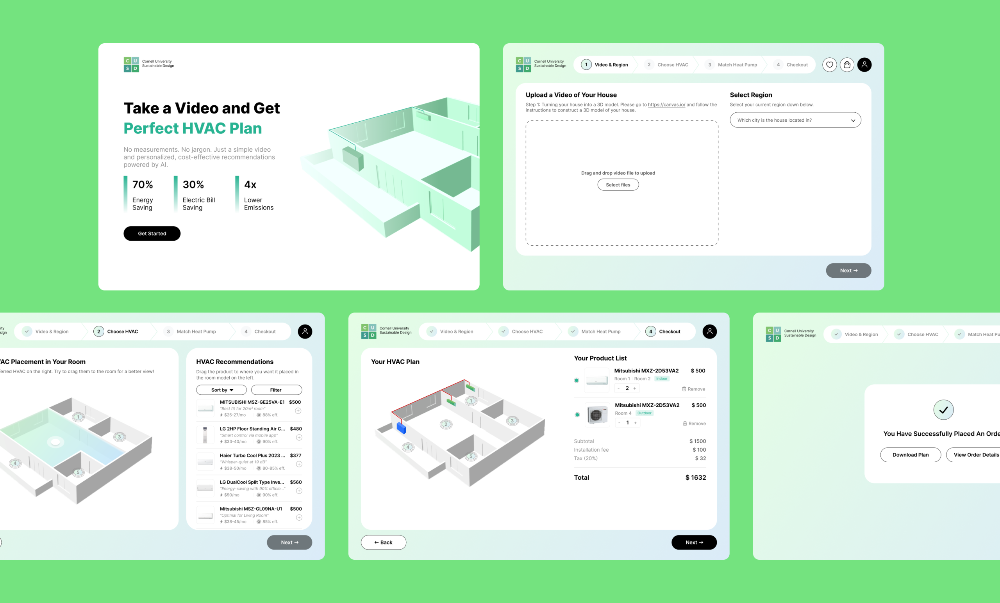

Smart HVAC
Designing AI-powered home energy systems to accelerate heat-pump adoption and reduce 32% carbon emissions.
Partnered with BlocPower, this project focused on reducing unnecessary heating and cooling energy waste across indoor environments using real-time sensor data and automated control logic.
Role
Team Leader
Backend SWE
Timeline
2023-2025
@Cornell University
Team Members
Benson
Liam
Mckinsey
Xiaolin
Chloe
Skills
Python, R, Java, CAD Design
Data Analysis
Product Strategy
Sustainability Modeling
I led the product direction and core system logic, working with an engineering team to integrate motion, temperature, and air-quality sensors with a dynamic HVAC control model. My contribution centered on defining the data flow, building the decision logic, and validating energy-use patterns through prototype testing.
The system demonstrated measurable efficiency gains in pilot settings, showing potential to scale across campus buildings to support Cornell’s sustainability and decarbonization goals.
The Problem
1. Challenge: Understanding Heat Pumps
Ithaca’s Green New Deal aims to electrify 6,000 buildings by 2030, but during community outreach I noticed a major barrier: homeowners struggle to visualize how air-source heat pumps fit into their homes—where units go, how many they need, and whether the investment pays off.
2. Barrier: Complexity & Decision Risk
The installation process seems technical, costly, and hard to understand without specialists. Most people rely entirely on contractors, which makes the adoption process intimidating and slow.
3. Constraint: Limited Technician Capacity
At the same time, a shortage of HVAC technicians drives up labor costs and consultation wait times. This creates hesitation and delays—especially for households who want clean energy upgrades but need more clarity and confidence before committing.

Why It Matters
Without transparent and intuitive planning tools, electrification remains inaccessible.
The Root Cause
People are reluctant to commit to new technology when they cannot picture the result, understand the value, or trust the process. Every hesitant homeowner slows the city’s progress toward decarbonization.
Visions for Impact
For electrification to truly scale — and do so equitably — homeowners need clarity, confidence, and autonomy in the decision-making process. I wanted to build something that makes climate technology feel familiar, understandable, and empowering, rather than intimidating.
Initial Ideation
Stage 1: Information ≠ confidence.
Our team's first idea was simple: build a clean information portal explaining HVAC electrification, financial incentives, and heat-pump types. But during conversations with residents, I realized that information alone isn't enough. People didn’t just want knowledge — they wanted to see what electrification would look like in their own homes.


Stage 2: Generic visuals ≠ real decisions.
The insight mentioned above shifted our concept toward a visual planning tool. We explored ideas like static diagrams, interactive floor-planning tools, and even printable “placement templates,” but each felt too abstract. Real homes are complex — different shapes, room volumes, insulation quality, and airflow needs. If the tool didn’t reflect those unique layouts, it wouldn't solve uncertainty.

Stage 3: Personalized modeling = adoption unlock.
That led us to the core concept: a mobile tool where users can scan their home, generate a 3D model, and receive an optimized heat-pump configuration with visual placement and savings estimates. This idea blended my interest in sustainability, design, and machine learning, and it aligned closely with Ithaca’s workforce and electrification goals.
Drag to Interact! CAD scan of my room used for HVAC modeling
Problems Encountered
1. Reliable Home Scanning & Dimension Capture
Consumer phones can scan rooms, but accuracy varies based on lighting, furniture, and user movement. We also needed a system to detect suitable wall space, understand airflow paths, and recommend heat-pump types without overwhelming the user. On top of that, we needed to communicate energy savings and long-term value in a way that doesn't feel like a contractor sales pitch.
2. Lack of Installation Guidance
If one goal is reducing reliance on expensive HVAC labor, we needed to support user-driven installation. However, HVAC installation involves electrical safety, drilling, and sealed refrigerant lines. We had to balance empowerment with safety and feasibility.
Our Solutions
Scan Your Home, in Seconds
We built a prototype allowing users to scan a room and view its 3D structure. This step validated that consumer-grade sensing was accurate enough for model generation.

Drag, Drop, Done
We created a simple interface for dragging and placing heat-pump units inside the model. Early testers tried placing units too close to windows or corners, which showed us that the system needed built-in recommendations and warnings.

The Model Does the Math
We integrated a basic optimization engine that suggests the number and type of heat-pump units based on room size and user-defined temperature preferences. This allowed us to generate a visual “optimized layout” rather than just letting users guess.

AR: Your Personal HVAC Coach
We created an AR instruction layer showing exact mounting points, drilling guidance, and clearance requirements.
Instead of a flat checklist, users receive spatial guidance, which is the same way Apple Vision Pro apps guide spatial setup. This approach turns a complex HVAC project into a step-by-step, visually guided task.
While fully self-installation isn’t safe for refrigerant handling, the AR system helps homeowners prepare spaces, understand the installation path, and significantly reduce professional labor time.
Reflection & Looking Forward
Climate Tech Needs a Human Heart
This project taught me that climate solutions succeed when they speak human language, not just engineering language. Homeowners don’t just need kilowatt-hour charts and payback curves; they need certainty, transparency, and agency. By giving people the ability to “see” electrification before committing, we remove fear and build trust. And by adding AR-assisted installation, we lower cost barriers that make clean energy feel exclusive.
Turning Innovation Into Belief
My favorite part of this project wasn’t the technical stack, it was seeing technology become a bridge between innovation and community trust. Electrification isn’t just an engineering challenge; it’s a design challenge, a storytelling challenge, and a human-confidence challenge. This tool is one step toward making sustainable living intuitive and familiar, something everyone can picture in their own home.